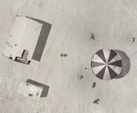

Eden's Edge

O.N.L.S.D. (Office for Narrative Landscape Design) – Österreich / USA 2015
61 min – HD – engl. OF
R: Gerhard Treml, Leo Calice, O.N.L.S.D. – P: O.N.L.S.D.
edens-edge.org
"The almost ethereal atmosphere both plays on the 'shamanistic' connotation of the desert and encourages the viewer to concentrate more on the spoken words than on the visual, whereby a unique intimacy is established between the viewer and the spoken word. The synergy between the visual, the soundscape and the play of meaning produces stories that function at the level of representation, performativity and at the level of eventness within which each story is established as an autonomous event. But despite their diversity, a special energy develops among them, weaving the visual image and the sound into a harmonious whole." – Nina Cvar, Kino Otok, Isola-Cinema
wednesday 8.15 pm werkstattkino
O.N.L.S.D (office for narrative landscape design) consists of Laurent Fathollahzadeh, Tarique Qayumi, Edith Schwarzl, Elisabeth Marko, Christina Linortner, Leo Calice and Gerhard Treml. EDEN’S EDGE is their first film.
Gerhard Treml is an American/Austrian artist based in Vienna. His practice explores narrative strategies in order to appropriate, investigate, and reconfigure spatial relations basic to our construction of reality.
Leopold Calice studied Landscape Design at the University of Applied Arts Vienna. He is interested in ephemeral interventions allowing for a new interpretation of places and the creation of (imaginative) spaces.